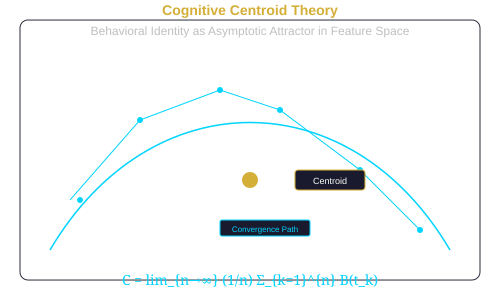

Scientific Theory

Axiomatic Foundation
The framework is grounded in 16 formal axioms organized into six groups. These axioms are proposed as logically necessary conditions that any valid behavioral attribution methodology must satisfy.
Axiom Groups
| Group | Count | Scope | Status |
|---|---|---|---|
| Core | 4 | Uncertainty conservation, measurement prerequisite, evidential boundedness, attribution reflexivity | PROPOSED |
| Behavior | 3 | Signal composition, signal non-identity, comparison relativity | PROPOSED |
| Identity | 2 | Identity consistency, identity non-repudiation | PROPOSED |
| Attribution | 2 | Conclusion grounding, uncertainty honesty | PROPOSED |
| Evidence | 3 | Evidence non-contradiction, evidence completeness, fusion monotonicity | PROPOSED |
| Reasoning | 2 | Logical consistency, inference validity | PROPOSED |
Cognitive Centroid Theory
The central theoretical construct is the Cognitive Centroid, defined as the asymptotic mean of an individual's behavioral feature vectors as the number of observations approaches infinity:
C = lim_{n→∞} (1/n) Σ_{k=1}^{n} B(t_k)
where B(t_k) is the behavioral feature vector at observation time t_k.
The Cognitive Centroid is hypothesized to possess four formal properties:
- Uniqueness — Each individual has a unique Cognitive Centroid in behavioral feature space.
- Stability — The centroid converges to a stable value as observations increase.
- Measurability — The centroid can be estimated from observable behavioral data.
- Invariance — The centroid is invariant across platforms and technical environments.
Research Hypotheses
Twenty research hypotheses are defined across four groups:
| Group | Count | Status |
|---|---|---|
| Core | 4 (HYP-CORE-001 to 004) | 1 VALIDATED, 3 PROPOSED |
| Behavioral | 6 (HYP-BEH-001 to 006) | PROPOSED |
| Identity | 5 (HYP-ID-001 to 005) | PROPOSED |
| Cross-Domain | 5 (HYP-CRS-001 to 005) | PROPOSED |